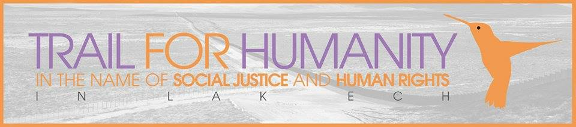

July 22nd, 2014
"We invite all mothers and their children to join and lead the pilgrimage." Tuesday July 22, 2014 mothers and their children will begin a 300-mile, 30-day pilgrimage from Merced to the U.S. – Mexico border. The goals:
- Pressure the Obama administration to put a halt to its deportation enforcement only regime until the Senate and House come together and pass a Just and Humane Immigration Reform, Not 1 more deportation!
- Call for an end to the use of Police as Immigration enforcement Agents, no to the failed Secure Communities and 287g programs, No a la Poli-Migra!
a. Demand an end to family separations, 3,750,000 of citizen children have had a parent deported.
- Stem the tide toward Racial Profiling that has incarcerated so many migrant and African American brothers and sisters, no to SB 1070 and copycat laws, no to gang injunctions, Stop "stop and frisk" and the targeted check points in migrant communities.
The Trail
This map will be updated with more details and ways uyou can help.
Please check back often.
Recent News